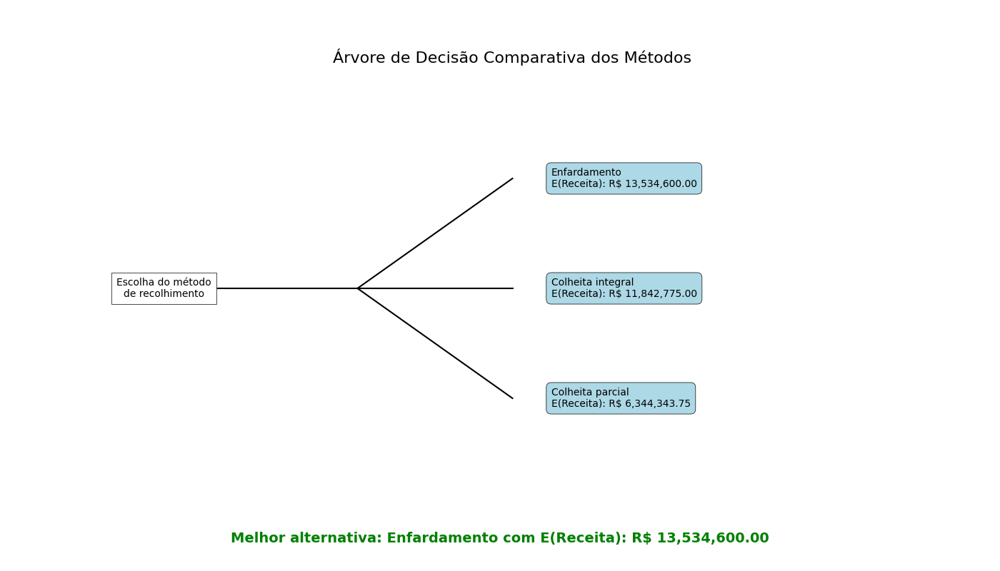

Selecione uma Região para Análise de Previsão
Passo 1: Entendendo o Comportamento do Preço
Antes de prever, precisamos entender. A análise de decomposição divide a série de preços em seus componentes fundamentais: a Tendência de longo prazo, os ciclos de Sazonalidade e os Resíduos (ruído aleatório).
Decomposição da Série Temporal
Clique na imagem para expandir.Passo 2: Preparação e Limpeza dos Dados
Com os padrões identificados, o próximo passo foi tratar os "outliers" – valores atípicos que podem distorcer a análise. Isso garante uma série temporal mais estável e previsões mais confiáveis.
Detecção e Tratamento de Outliers
 Clique na imagem para expandir.
Clique na imagem para expandir.Passo 3: A Escolha dos Modelos Preditivos
Aplicamos três abordagens estatísticas robustas e comparamos seus resultados para obter uma visão mais completa e confiável do futuro.
Prophet
Excelente para dados com fortes tendências sazonais. Robusto a dados faltantes e mudanças de tendência.
ARIMA
Modelo estatístico clássico para análise de séries temporais, ideal para capturar tendências e dependências nos dados.
SARIMA
Uma evolução do ARIMA que adiciona um componente para tratar explicitamente da sazonalidade, tornando-o poderoso para este tipo de dado.
Passo 4: Previsões e Análise de Cenários
Comparativo de Previsões de Preço
 Clique na imagem para expandir.
Clique na imagem para expandir.Tabela Detalhada (Próximos 16 Meses)
Passo 5: Análise de Decisão Baseada em Dados Históricos
Esta análise utiliza uma Árvore de Decisão para determinar a melhor estratégia de recolhimento de palhiço, baseada na probabilidade de ocorrência de diferentes faixas de preço extraídas de toda a série histórica. O objetivo é escolher a alternativa com o maior Valor Monetário Esperado (E(Receita)). A galeria abaixo detalha cada etapa desta análise.
Árvore de Decisão Comparativa das Alternativas
O gráfico abaixo consolida os resultados, apontando a melhor alternativa geral.
 Clique na imagem para expandir.Galeria de Análises de Suporte

Passo 6: Ferramenta de Análise de Investimento (Baseada em Previsões Futuras)
Diferente da Árvore de Decisão, que usa probabilidades históricas, esta ferramenta utiliza as previsões de preço para os próximos 16 meses geradas pelos modelos (Prophet, ARIMA, SARIMA). Ela permite simular um cenário de investimento futuro, calculando a economia que seria gerada ao produzir energia própria em vez de comprá-la da rede. Isso oferece uma análise de viabilidade financeira orientada para o futuro, complementando a análise de risco histórico.
| Modelo de Previsão | Economia Total em 16 meses | Resultado (Lucro/Prejuízo) | Retorno do Investimento (Payback) | Recomendação |
|---|